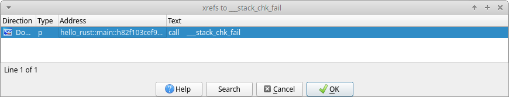

Exploit Mitigations
This chapter documents the exploit mitigations supported by the Rust compiler, and is by no means an extensive survey of the Rust programming language’s security features.
This chapter is for software engineers working with the Rust programming language, and assumes prior knowledge of the Rust programming language and its toolchain.
Introduction
The Rust programming language provides memory[1] and thread[2] safety guarantees via its ownership[3], references and borrowing[4], and slice types[5] features. However, Unsafe Rust[6] introduces unsafe blocks, unsafe functions and methods, unsafe traits, and new types that are not subject to the borrowing rules.
Parts of the Rust standard library are implemented as safe abstractions over unsafe code (and historically have been vulnerable to memory corruption[7]). Furthermore, the Rust code and documentation encourage creating safe abstractions over unsafe code. This can cause a false sense of security if unsafe code is not properly reviewed and tested.
Unsafe Rust introduces features that do not provide the same memory and thread safety guarantees. This causes programs or libraries to be susceptible to memory corruption (CWE-119)[8] and concurrency issues (CWE-557)[9]. Modern C and C++ compilers provide exploit mitigations to increase the difficulty to exploit vulnerabilities resulting from these issues. Therefore, the Rust compiler must also support these exploit mitigations in order to mitigate vulnerabilities resulting from the use of Unsafe Rust. This chapter documents these exploit mitigations and how they apply to Rust.
This chapter does not discuss the effectiveness of these exploit mitigations as they vary greatly depending on several factors besides their design and implementation, but rather describe what they do, so their effectiveness can be understood within a given context.
Exploit mitigations
This section documents the exploit mitigations applicable to the Rust compiler when building programs for the Linux operating system on the AMD64 architecture and equivalent.1
The Rust Programming Language currently has no specification. The Rust compiler (i.e., rustc) is the language reference implementation. All references to “the Rust compiler” in this chapter refer to the language reference implementation.
Table I
Summary of exploit mitigations supported by the Rust compiler when building
programs for the Linux operating system on the AMD64 architecture and
equivalent.
| Exploit mitigation | Supported and enabled by default | Since |
| Position-independent executable | Yes | 0.12.0 (2014-10-09) |
| Integer overflow checks | Yes (enabled when debug assertions are enabled, and disabled when debug assertions are disabled) | 1.1.0 (2015-06-25) |
| Non-executable memory regions | Yes | 1.8.0 (2016-04-14) |
| Stack clashing protection | Yes | 1.20.0 (2017-08-31) |
| Read-only relocations and immediate binding | Yes | 1.21.0 (2017-10-12) |
| Heap corruption protection | Yes | 1.32.0 (2019-01-17) (via operating system default or specified allocator) |
| Stack smashing protection | Yes | Nightly |
| Forward-edge control flow protection | Yes | Nightly |
| Backward-edge control flow protection (e.g., shadow and safe stack) | No |
1. See https://github.com/rust-lang/rust/tree/master/compiler/rustc_target/src/spec for a list of targets and their default options. ↩
Position-independent executable
Position-independent executable increases the difficulty of the use of code reuse exploitation techniques, such as return-oriented programming (ROP) and variants, by generating position-independent code for the executable, and instructing the dynamic linker to load it similarly to a shared object at a random load address, thus also benefiting from address-space layout randomization (ASLR). This is also referred to as “full ASLR”.
The Rust compiler supports position-independent executable, and enables it by default since version 0.12.0 (2014-10-09)[10]–[13].
$ readelf -h target/release/hello-rust | grep Type:
Type: DYN (Shared object file)
Fig. 1. Checking if an executable is a position-independent executable.
An executable with an object type of ET_DYN (i.e., shared object) and not
ET_EXEC (i.e., executable) is a position-independent executable (see Fig.
1).
Integer overflow checks
Integer overflow checks protects programs from undefined and unintended behavior (which may cause vulnerabilities) by checking for results of signed and unsigned integer computations that cannot be represented in their type, resulting in an overflow or wraparound.
The Rust compiler supports integer overflow checks, and enables it when debug assertions are enabled since version 1.1.0 (2015-06-25)[14]–[20].
fn main() {
let u: u8 = 255;
println!("u: {}", u + 1);
}
Fig. 2. hello-rust-integer program.
$ cargo run
Compiling hello-rust-integer v0.1.0 (/home/rcvalle/hello-rust-integer)
Finished dev [unoptimized + debuginfo] target(s) in 0.23s
Running `target/debug/hello-rust-integer`
thread 'main' panicked at 'attempt to add with overflow', src/main.rs:3:23
note: run with `RUST_BACKTRACE=1` environment variable to display a backtrace.
Fig. 3. Build and execution of hello-rust-integer with debug assertions enabled.
$ cargo run --release
Compiling hello-rust-integer v0.1.0 (/home/rcvalle/hello-rust-integer)
Finished release [optimized] target(s) in 0.23s
Running `target/release/hello-rust-integer`
u: 0
Fig. 4. Build and execution of hello-rust-integer with debug assertions disabled.
Integer overflow checks are enabled when debug assertions are enabled (see
Fig. 3), and disabled when debug assertions are disabled (see Fig. 4). To
enable integer overflow checks independently, use the option to control
integer overflow checks, scoped attributes, or explicit checking methods
such as checked_add2.
It is recommended that explicit wrapping methods such as wrapping_add be
used when wrapping semantics are intended, and that explicit checking and
wrapping methods always be used when using Unsafe Rust.
2. See the u32 docs
for more information on the checked, overflowing, saturating, and wrapping
methods (using u32 as an example). ↩
Non-executable memory regions
Non-executable memory regions increase the difficulty of exploitation by limiting the memory regions that can be used to execute arbitrary code. Most modern processors provide support for the operating system to mark memory regions as non executable, but it was previously emulated by software, such as in grsecurity/PaX's PAGEEXEC and SEGMEXEC, on processors that did not provide support for it. This is also known as “No Execute (NX) Bit”, “Execute Disable (XD) Bit”, “Execute Never (XN) Bit”, and others.
The Rust compiler supports non-executable memory regions, and enables it by default since its initial release, version 0.1 (2012-01-20)[21], [22], but has regressed since then[23]–[25], and enforced by default since version 1.8.0 (2016-04-14)[25].
$ readelf -l target/release/hello-rust | grep -A 1 GNU_STACK
GNU_STACK 0x0000000000000000 0x0000000000000000 0x0000000000000000
0x0000000000000000 0x0000000000000000 RW 0x10
Fig. 5. Checking if non-executable memory regions are enabled for a given binary.
The presence of an element of type PT_GNU_STACK in the program header
table with the PF_X (i.e., executable) flag unset indicates non-executable
memory regions3 are enabled for a given binary (see Fig. 5).
Conversely, the presence of an element of type PT_GNU_STACK in the program
header table with the PF_X flag set or the absence of an element of type
PT_GNU_STACK in the program header table indicates non-executable memory
regions are not enabled for a given binary.
3. See the Appendix section for more information on why it affects other memory regions besides the stack. ↩
Stack clashing protection
Stack clashing protection protects the stack from overlapping with another memory region—allowing arbitrary data in both to be overwritten using each other—by reading from the stack pages as the stack grows to cause a page fault when attempting to read from the guard page/region. This is also referred to as “stack probes” or “stack probing”.
The Rust compiler supports stack clashing protection via stack probing, and enables it by default since version 1.20.0 (2017-08-31)[26]–[29].
 Fig. 6. IDA Pro listing cross references to
Fig. 6. IDA Pro listing cross references to __rust_probestack in
hello-rust.
fn hello() { println!("Hello, world!"); } fn main() { let _: [u64; 1024] = [0; 1024]; hello(); }
Fig 7. Modified hello-rust.
 Fig. 8. IDA Pro listing cross references to
Fig. 8. IDA Pro listing cross references to __rust_probestack in modified
hello-rust.
To check if stack clashing protection is enabled for a given binary, search
for cross references to __rust_probestack. The __rust_probestack is
called in the prologue of functions whose stack size is larger than a page
size (see Fig. 6), and can be forced for illustration purposes by modifying
the hello-rust example as seen in Fig. 7 and Fig. 8.
Read-only relocations and immediate binding
Read-only relocations protect segments containing relocations and
relocation information (i.e., .init_array, .fini_array, .dynamic, and
.got) from being overwritten by marking these segments read only. This is
also referred to as “partial RELRO”.
The Rust compiler supports read-only relocations, and enables it by default since version 1.21.0 (2017-10-12)[30], [31].
$ readelf -l target/release/hello-rust | grep GNU_RELRO
GNU_RELRO 0x000000000002ee00 0x000000000002fe00 0x000000000002fe00
Fig. 9. Checking if read-only relocations is enabled for a given binary.
The presence of an element of type PT_GNU_RELRO in the program header
table indicates read-only relocations are enabled for a given binary (see
Fig. 9). Conversely, the absence of an element of type PT_GNU_RELRO in the
program header table indicates read-only relocations are not enabled for a
given binary.
Immediate binding protects additional segments containing relocations
(i.e., .got.plt) from being overwritten by instructing the dynamic linker
to perform all relocations before transferring control to the program during
startup, so all segments containing relocations can be marked read only
(when combined with read-only relocations). This is also referred to as
“full RELRO”.
The Rust compiler supports immediate binding, and enables it by default since version 1.21.0 (2017-10-12)[30], [31].
$ readelf -d target/release/hello-rust | grep BIND_NOW
0x000000000000001e (FLAGS) BIND_NOW
Fig. 10. Checking if immediate binding is enabled for a given binary.
The presence of an element with the DT_BIND_NOW tag and the DF_BIND_NOW
flag4 in the dynamic section indicates immediate
binding is enabled for a given binary (see Fig. 10). Conversely, the absence
of an element with the DT_BIND_NOW tag and the DF_BIND_NOW flag in the
dynamic section indicates immediate binding is not enabled for a given
binary.
The presence of both an element of type PT_GNU_RELRO in the program header
table and of an element with the DT_BIND_NOW tag and the DF_BIND_NOW
flag in the dynamic section indicates full RELRO is enabled for a given
binary (see Fig. 9 and Fig. 10).
4. And the DF_1_NOW flag for some link editors. ↩
Heap corruption protection
Heap corruption protection protects memory allocated dynamically by performing several checks, such as checks for corrupted links between list elements, invalid pointers, invalid sizes, double/multiple “frees” of the same memory allocated, and many corner cases of these. These checks are implementation specific, and vary per allocator.
ARM Memory Tagging Extension (MTE), when available, will provide hardware assistance for a probabilistic mitigation to detect memory safety violations by tagging memory allocations, and automatically checking that the correct tag is used on every memory access.
Rust’s default allocator has historically been jemalloc, and it has long been the cause of issues and the subject of much discussion[32]–[38]. Consequently, it has been removed as the default allocator in favor of the operating system’s standard C library default allocator5 since version 1.32.0 (2019-01-17)[39].
fn main() { let mut x = Box::new([0; 1024]); for i in 0..1026 { unsafe { let elem = x.get_unchecked_mut(i); *elem = 0x4141414141414141u64; } } }
Fig. 11. hello-rust-heap program.
$ cargo run
Compiling hello-rust-heap v0.1.0 (/home/rcvalle/hello-rust-heap)
Finished dev [unoptimized + debuginfo] target(s) in 0.25s
Running `target/debug/hello-rust-heap`
free(): invalid next size (normal)
Aborted
Fig. 12. Build and execution of hello-rust-heap with debug assertions enabled.
$ cargo run --release
Compiling hello-rust-heap v0.1.0 (/home/rcvalle/hello-rust-heap)
Finished release [optimized] target(s) in 0.25s
Running `target/release/hello-rust-heap`
free(): invalid next size (normal)
Aborted
Fig. 13. Build and execution of hello-rust-heap with debug assertions disabled.
Heap corruption checks are being performed when using the default allocator (i.e., the GNU Allocator) as seen in Fig. 12 and Fig. 13.
5. Linux's standard C library default allocator is the GNU Allocator, which is derived from ptmalloc (pthreads malloc) by Wolfram Gloger, which in turn is derived from dlmalloc (Doug Lea malloc) by Doug Lea. ↩
Stack smashing protection
Stack smashing protection protects programs from stack-based buffer overflows by inserting a random guard value between local variables and the saved return instruction pointer, and checking if this value has changed when returning from a function. This is also known as “Stack Protector” or “Stack Smashing Protector (SSP)”.
The Rust compiler supports stack smashing protection on nightly builds[42].

Fig. 14. IDA Pro listing cross references to __stack_chk_fail in
hello-rust.
To check if stack smashing protection is enabled for a given binary, search
for cross references to __stack_chk_fail. The presence of these
cross-references in Rust-compiled code (e.g., hello_rust::main) indicates
that the stack smashing protection is enabled (see Fig. 14).
Forward-edge control flow protection
Forward-edge control flow protection protects programs from having its control flow changed/hijacked by performing checks to ensure that destinations of indirect branches are one of their valid destinations in the control flow graph. The comprehensiveness of these checks vary per implementation. This is also known as “forward-edge control flow integrity (CFI)”.
Newer processors provide hardware assistance for forward-edge control flow protection, such as ARM Branch Target Identification (BTI), ARM Pointer Authentication, and Intel Indirect Branch Tracking (IBT) as part of Intel Control-flow Enforcement Technology (CET). However, ARM BTI and Intel IBT -based implementations are less comprehensive than software-based implementations such as LLVM ControlFlowIntegrity (CFI), and the commercially available grsecurity/PaX Reuse Attack Protector (RAP).
The Rust compiler supports forward-edge control flow protection on nightly builds[40]-[41] 6.
$ readelf -s -W target/debug/rust-cfi | grep "\.cfi"
12: 0000000000005170 46 FUNC LOCAL DEFAULT 14 _RNvCsjaOHoaNjor6_8rust_cfi7add_one.cfi
15: 00000000000051a0 16 FUNC LOCAL DEFAULT 14 _RNvCsjaOHoaNjor6_8rust_cfi7add_two.cfi
17: 0000000000005270 396 FUNC LOCAL DEFAULT 14 _RNvCsjaOHoaNjor6_8rust_cfi4main.cfi
...
Fig. 15. Checking if LLVM CFI is enabled for a given binary[41].
The presence of symbols suffixed with ".cfi" or the __cfi_init symbol (and
references to __cfi_check) indicates that LLVM CFI (i.e., forward-edge control
flow protection) is enabled for a given binary. Conversely, the absence of
symbols suffixed with ".cfi" or the __cfi_init symbol (and references to
__cfi_check) indicates that LLVM CFI is not enabled for a given binary (see
Fig. 15).
6. It also supports Control Flow Guard (CFG) on Windows (see https://github.com/rust-lang/rust/issues/68793). ↩
Backward-edge control flow protection
Shadow stack protects saved return instruction pointers from being overwritten by storing a copy of them on a separate (shadow) stack, and using these copies as authoritative values when returning from functions. This is also known as “ShadowCallStack” and “Return Flow Guard”, and is considered an implementation of backward-edge control flow protection (or “backward-edge CFI”).
Safe stack protects not only the saved return instruction pointers, but also register spills and some local variables from being overwritten by storing unsafe variables, such as large arrays, on a separate (unsafe) stack, and using these unsafe variables on the separate stack instead. This is also known as “SafeStack”, and is also considered an implementation of backward-edge control flow protection.
Both shadow and safe stack are intended to be a more comprehensive alternatives to stack smashing protection as they protect the saved return instruction pointers (and other data in the case of safe stack) from arbitrary writes and non-linear out-of-bounds writes.
Newer processors provide hardware assistance for backward-edge control flow protection, such as ARM Pointer Authentication, and Intel Shadow Stack as part of Intel CET.
The Rust compiler does not support shadow or safe stack. There is work currently ongoing to add support for the sanitizers[40], which may or may not include support for safe stack7.
$ readelf -s target/release/hello-rust | grep __safestack_init
Fig. 16. Checking if LLVM SafeStack is enabled for a given binary.
The presence of the __safestack_init symbol indicates that LLVM SafeStack
is enabled for a given binary. Conversely, the absence of the
__safestack_init symbol indicates that LLVM SafeStack is not enabled for a
given binary (see Fig. 16).
7. The shadow stack implementation for the AMD64 architecture and equivalent in LLVM was removed due to performance and security issues. ↩
Appendix
As of the latest version of the Linux Standard Base (LSB) Core
Specification,
the PT_GNU_STACK program header indicates whether the stack should be
executable, and the absence of this header indicates that the stack should
be executable. However, the Linux kernel currently sets the
READ_IMPLIES_EXEC personality upon loading any executable with the
PT_GNU_STACK program header and the PF_X flag set or with the absence of
this header, resulting in not only the stack, but also all readable virtual
memory mappings being executable.
An attempt to fix this was made in
2012,
and another was made in
2020.
The former never landed, and the latter partially fixed it, but introduced
other issues—the absence of the PT_GNU_STACK program header still causes
not only the stack, but also all readable virtual memory mappings to be
executable in some architectures, such as IA-32 and equivalent (or causes
the stack to be non-executable in some architectures, such as AMD64 and
equivalent, contradicting the LSB).
The READ_IMPLIES_EXEC personality needs to be completely separated from
the PT_GNU_STACK program header by having a separate option for it (or
setarch -X could just be used whenever READ_IMPLIES_EXEC is needed), and
the absence of the PT_GNU_STACK program header needs to have more secure
defaults (unrelated to READ_IMPLIES_EXEC).
References
-
D. Hosfelt. “Fearless security: memory safety.” Mozilla Hacks. https://hacks.mozilla.org/2019/01/fearless-security-memory-safety/.
-
D. Hosfelt. “Fearless security: thread safety.” Mozilla Hacks. https://hacks.mozilla.org/2019/02/fearless-security-thread-safety/.
-
S. Klabnik and C. Nichols. “What Is Ownership?.” The Rust Programming Language. https://doc.rust-lang.org/book/ch04-01-what-is-ownership.html.
-
S. Klabnik and C. Nichols. “References and Borrowing.” The Rust Programming Language. https://doc.rust-lang.org/book/ch04-02-references-and-borrowing.html.
-
S. Klabnik and C. Nichols. “The Slice Type.” The Rust Programming Language. https://doc.rust-lang.org/book/ch04-03-slices.html.
-
S. Klabnik and C. Nichols. “Unsafe Rust.” The Rust Programming Language. https://doc.rust-lang.org/book/ch19-01-unsafe-rust.html.
-
S. Davidoff. “How Rust’s standard library was vulnerable for years and nobody noticed.” Medium. https://medium.com/@shnatsel/how-rusts-standard-library-was-vulnerable-for-years-and-nobody-noticed-aebf0503c3d6.
-
“Improper restriction of operations within the bounds of a memory buffer (CWE-119).” MITRE CWE List. https://cwe.mitre.org/data/definitions/119.html.
-
“Concurrency issues (CWE-557).” MITRE CWE List. https://cwe.mitre.org/data/definitions/557.html.
-
K. McAllister. “Memory exploit mitigations #15179.” GitHub. https://github.com/rust-lang/rust/issues/15179.
-
K. McAllister. “RFC: Memory exploit mitigation #145.” GitHub. https://github.com/rust-lang/rfcs/pull/145.
-
K. McAllister. “RFC: Memory exploit mitigation.” GitHub. https://github.com/kmcallister/rfcs/blob/hardening/active/0000-memory-exploit-mitigation.md.
-
D. Micay. “Enable PIE by default on Linux for full ASLR #16340.” GitHub. https://github.com/rust-lang/rust/pull/16340.
-
N. Matsakis. “Integer overflow #560.” GitHub. https://github.com/rust-lang/rfcs/pull/560.
-
G. Lehel and N. Matsakis. “Integer overflow.” GitHub. https://rust-lang.github.io/rfcs/0560-integer-overflow.html.
-
A. Turon. “Tracking issue for integer overflow (RFC 560) #22020.” GitHub. https://github.com/rust-lang/rust/issues/22020.
-
H. Wilson. “Myths and legends about integer overflow in Rust.” Huon on the Internet. http://huonw.github.io/blog/2016/04/myths-and-legends-about-integer-overflow-in-rust/.
-
B. Anderson. “Stabilize -C overflow-checks #1535.” GitHub. https://github.com/rust-lang/rfcs/pull/1535.
-
B. Anderson. “Stable overflow checks.” GitHub. https://github.com/brson/rfcs/blob/overflow/text/0000-stable-overflow-checks.md.
-
N. Froyd. “Add -C overflow-checks option #40037.” GitHub. https://github.com/rust-lang/rust/pull/40037.
-
R. Á. de Espíndola. “rustc requires executable stack #798.” GitHub. https://github.com/rust-lang/rust/issues/798.
-
A. Seipp. “Make sure librustrt.so is linked with a non-executable stack. #1066.” GitHub. https://github.com/rust-lang/rust/pull/1066.
-
D. Micay. “Rust binaries should not have an executable stack #5643.” GitHub. https://github.com/rust-lang/rust/issues/5643.
-
D. Micay. “Mark the assembly object stacks as non-executable #5647.” GitHub. https://github.com/rust-lang/rust/pull/5647.
-
A. Clark. “Explicitly disable stack execution on linux and bsd #30859.” GitHub. https://github.com/rust-lang/rust/pull/30859.
-
“Replace stack overflow checking with stack probes #16012.” GitHub. https://github.com/rust-lang/rust/issues/16012.
-
B. Striegel. “Extend stack probe support to non-tier-1 platforms, and clarify policy for mitigating LLVM-dependent unsafety #43241.” GitHub. https://github.com/rust-lang/rust/issues/43241.
-
A. Crichton. “rustc: Implement stack probes for x86 #42816.” GitHub. https://github.com/rust-lang/rust/pull/42816.
-
A. Crichton. “Add __rust_probestack intrinsic #175.” GitHub. https://github.com/rust-lang/compiler-builtins/pull/175.
-
B. Anderson. “Consider applying -Wl,-z,relro or -Wl,-z,relro,-z,now by default #29877.” GitHub. https://github.com/rust-lang/rust/issues/29877.
-
J. Löthberg. “Add support for full RELRO #43170.” GitHub. https://github.com/rust-lang/rust/pull/43170.
-
N. Matsakis. “Allocators in Rust.” Baby Steps. http://smallcultfollowing.com/babysteps/blog/2014/11/14/allocators-in-rust/.
-
A. Crichton. “RFC: Allow changing the default allocator #1183.” GitHub. https://github.com/rust-lang/rfcs/pull/1183.
-
A. Crichton. “RFC: Swap out jemalloc.” GitHub. https://rust-lang.github.io/rfcs/1183-swap-out-jemalloc.html.
-
A. Crichton. “Tracking issue for changing the global, default allocator (RFC 1974) #27389.” GitHub. https://github.com/rust-lang/rust/issues/27389.
-
S. Fackler. “Prepare global allocators for stabilization #1974.” GitHub. https://github.com/rust-lang/rfcs/pull/1974.
-
A. Crichton. “RFC: Global allocators.” GitHub. https://rust-lang.github.io/rfcs/1974-global-allocators.html.
-
B. Anderson. “Switch the default global allocator to System, remove alloc_jemalloc, use jemallocator in rustc #36963.” GitHub. https://github.com/rust-lang/rust/issues/36963.
-
A. Crichton. “Remove the alloc_jemalloc crate #55238.” GitHub. https://github.com/rust-lang/rust/pull/55238.
-
R. de C Valle. “Tracking Issue for LLVM Control Flow Integrity (CFI) Support for Rust #89653.” GitHub. https://github.com/rust-lang/rust/issues/89653.
-
“ControlFlowIntegrity.” The Rust Unstable Book. https://doc.rust-lang.org/unstable-book/compiler-flags/sanitizer.html#controlflowintegrity.
-
bbjornse. “add codegen option for using LLVM stack smash protection #84197.” GitHub. https://github.com/rust-lang/rust/pull/84197